Reformas y servicios · Mallorca
Llegamos donde otros no llegan.
Reformas integrales, fachadas y trabajos en altura, cubiertas, fontanería y mantenimiento para particulares y empresas. Desde Muro, en toda Mallorca.
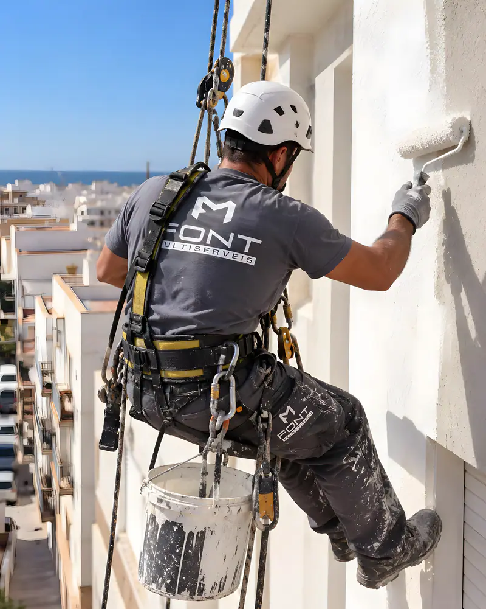
- 4,6en Google · 64 reseñas
- +10años de experiencia
- 24 hurgencias · 676 45 27 61
- ES · ENte atendemos en castellano e inglés
Servicios
Soluciones para tu hogar.
Reformas y servicios para particulares y empresas: un mismo equipo para la obra, el mantenimiento y las urgencias. Presupuestos sin compromiso.
-

Reformas integrales
Baños y cocinas que transmiten confort y elegancia. Diseño, funcionalidad y acabados de calidad: transformamos tus ideas en realidad.
Pedir presupuesto -

Fachadas y trabajos en altura
Pintura, rehabilitación e impermeabilización de fachadas y patios interiores con técnicas de trabajos verticales.
Pedir presupuesto -

Cubiertas e impermeabilización
Cubiertas, azoteas y castilletes saneados e impermeabilizados para que el agua no vuelva a entrar.
Pedir presupuesto -
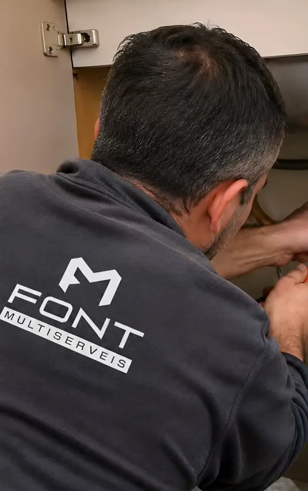
Fontanería y fugas
Detección y reparación de fugas, tuberías, grifería y sanitarios, y mantenimiento de instalaciones de agua.
Pedir presupuesto -
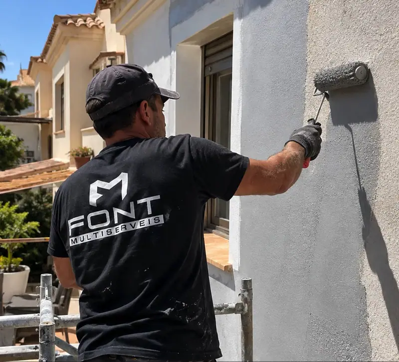
Pintura
Interiores, cajas de escalera, fachadas y piscinas, con la preparación que cada superficie necesita.
Pedir presupuesto -
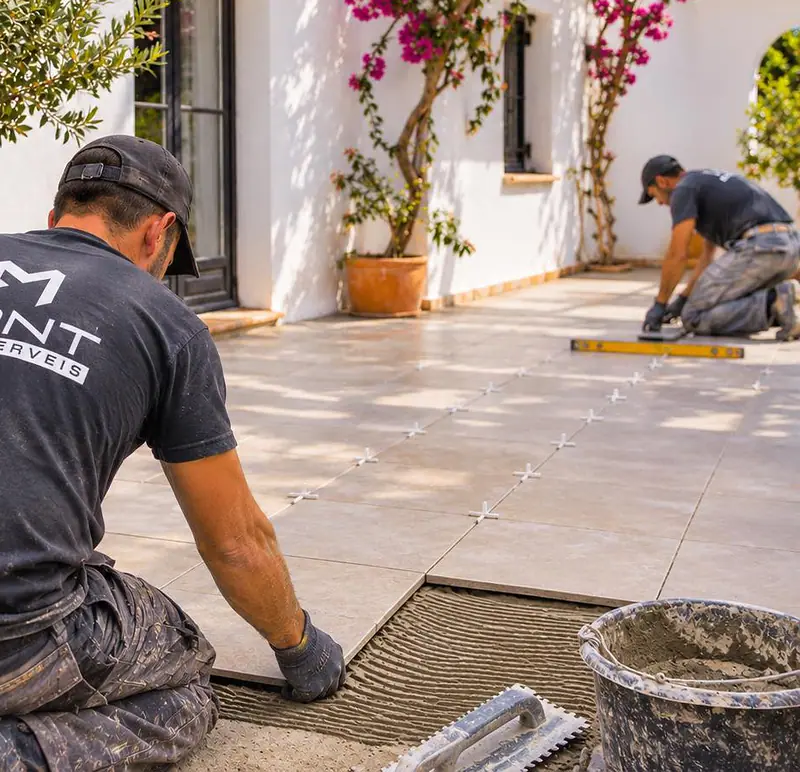
Suelos y revestimientos
Solerías interiores y exteriores, tarima flotante, alicatados, microcemento y revestimientos de piedra.
Pedir presupuesto -

Piscinas y jardines
Mantenimiento de piscinas y jardines, riego automático y reparación de tuberías en el jardín.
Pedir presupuesto -
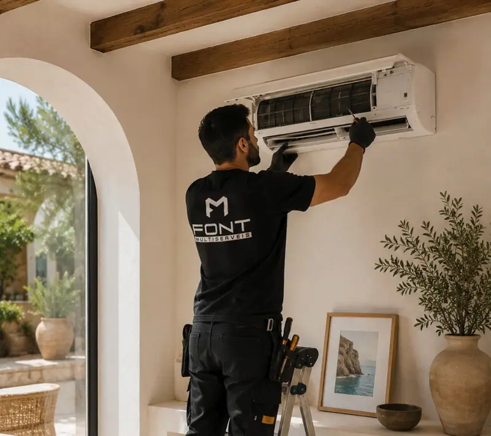
Electricidad y climatización
Instalaciones eléctricas, iluminación LED y aire acondicionado para estar a gusto todo el año.
Pedir presupuesto -
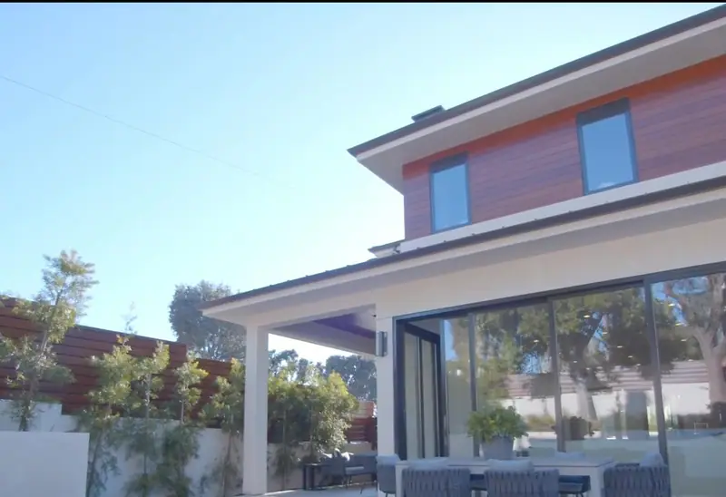
Casas de vacaciones
Dejamos tu casa de alquiler vacacional lista para la temporada y la revisamos al terminarla: reparaciones, pintura, piscina y jardín.
Pedir presupuesto -
Urgencias 24 h
¿Una fuga, una avería o te has quedado sin poder entrar en tu casa? Te atendemos a cualquier hora.
676 45 27 61 Llamar a urgencias


Trabajos en altura
Donde otros ven altura, nosotros vemos nuestro lugar de trabajo.
Realizamos trabajos de pintura, rehabilitación e impermeabilización de fachadas mediante técnicas de trabajos verticales, llegando a las zonas más complicadas con eficacia y profesionalidad.
- Rehabilitación de fachadas
- Patios interiores
- Sellados e impermeabilización
- Pintura y acabados
- Reparación de cubiertas
En los trabajos en altura, la seguridad siempre es lo primero: equipos preparados, materiales adecuados y todas las medidas de protección necesarias.
FONT MULTISERVEIS | Soluciones a cualquier altura.
Antes y después
Calidad que se ve. Confianza que se siente.
Trabajos para nuestros clientes en Mallorca. Arrastra la línea para ver el cambio.

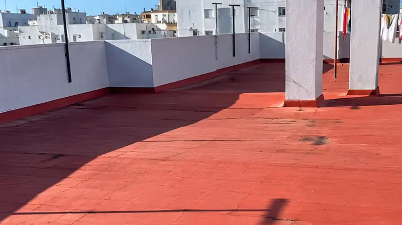


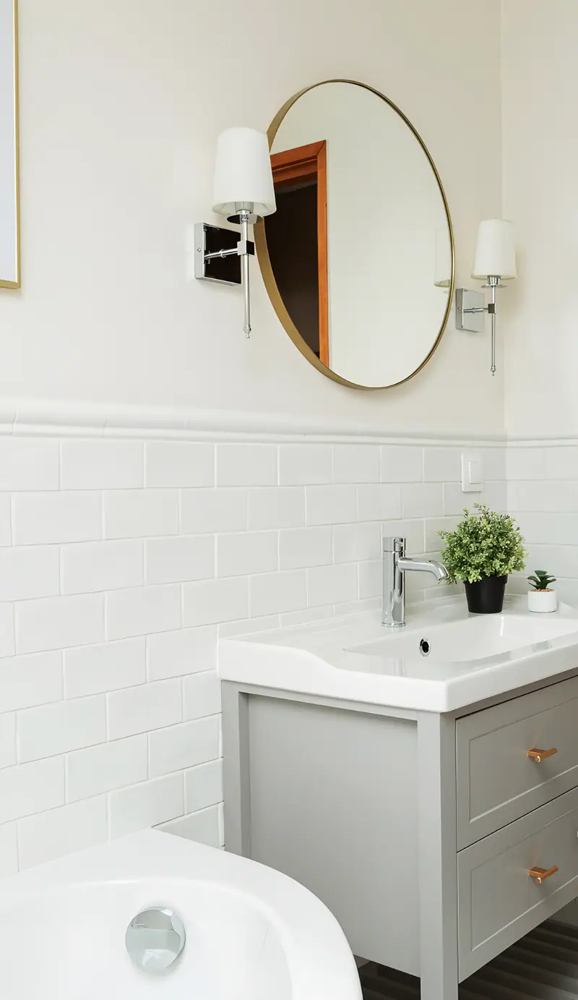
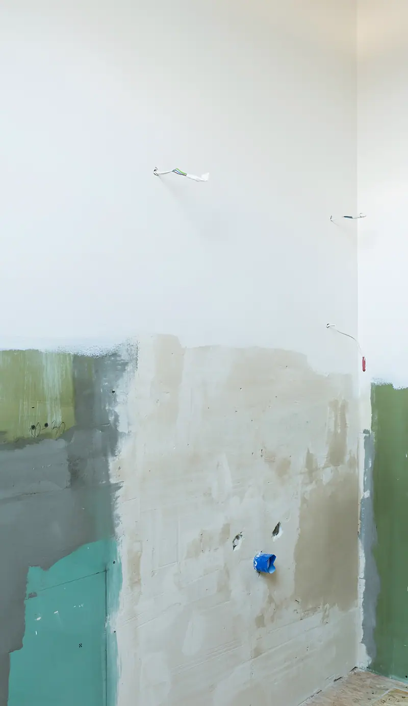
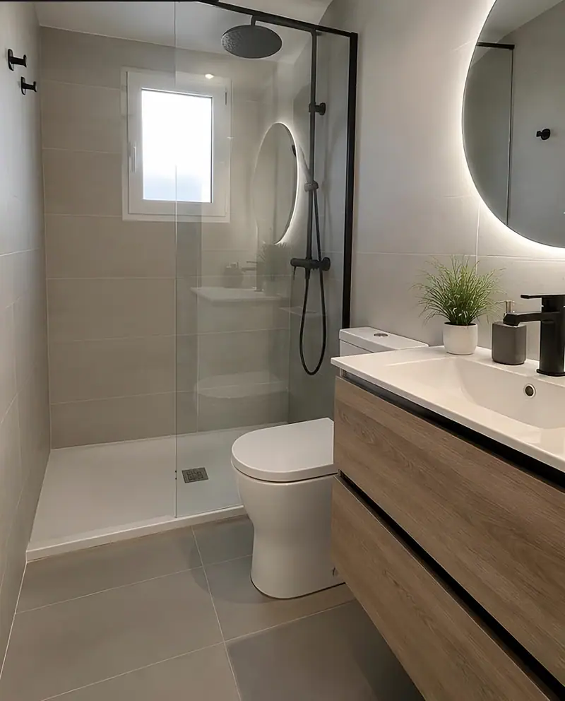

Más trabajos
Estilo mediterráneo
Te damos algunas ideas.
Baños de obra, duchas exteriores, pérgolas, piedra natural y suelos rústicos: inspiración para tu próxima reforma, como la que compartimos cada semana en Instagram.

Quiénes somos
Tu proyecto, nuestro compromiso.
Font Multiserveis es una empresa de reformas y servicios de Muro, en el norte de Mallorca. Somos un equipo de profesionales con más de 10 años de experiencia en el sector de la construcción y la pintura.
Al frente está Toni Font, gerente de la empresa. Trabajamos para particulares, comunidades y empresas, y también cuidamos casas de alquiler vacacional antes y después de la temporada.
- 01Profesionales comprometidosCada trabajo, cuidado al detalle de principio a fin.
- 02Presupuestos sin compromisoVamos, lo vemos y te damos un precio claro.
- 03SeguridadCompromiso, seguridad y profesionalidad en cada obra.
- 04Un solo equipoAlbañilería, fontanería, pintura y mantenimiento.


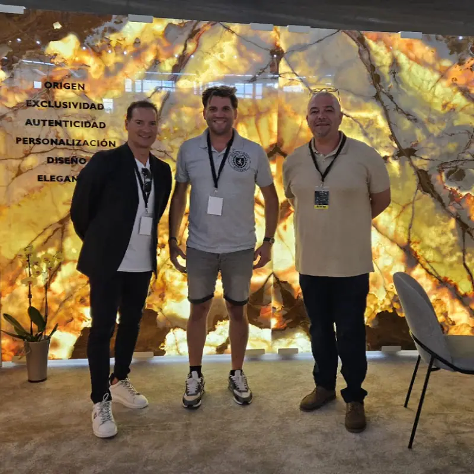
Opiniones
4,6 en Google, con 64 reseñas.
4,664 reseñas
Ver todas en Google-
«Empresa altamente recomendable: vinieron un domingo por una avería en menos de una hora y enseguida detectaron el problema y lo repararon. ¡Nos salvaron el domingo! El jefe Toni, un gran profesional.»
Christian C.Google · hace 3 años
-
«Contactamos con ellos para reformar un baño completo y desde el primer momento fuimos muy bien asesorados. Un gran equipo de profesionales que ejecutaron la obra a la perfección, entregada a tiempo según lo pactado. Buen trabajo, rápido y limpio.»
MCPGoogle · hace 2 años
-
«Me recomendaron la empresa de Font, me enviaron un fontanero en dos horas, me lo repararon y al día siguiente me enviaron al albañil para tapar los desperfectos. Lo recomiendo.»
María José S.Google · hace un año
-
«Toni es un gran profesional. Después de quedarnos encerrados fuera de casa, en un momento nos solucionó el problema. Muy recomendado.»
Tolo V.Google · hace un año
-
«Me han arreglado unas filtraciones de agua por grietas. Un trabajo excelente y profesional. Personal muy educado, rápido y eficiente. Han venido muy rápido.»
Bartolomé G.Google · hace 2 años
-
«Lluc, un auténtico profesional: súper amable, positivo y paciente. Vamos, un crack.»
Juli S.Google · hace un mes
Fuera de horario
Servicio de urgencias 24 horas.
Fugas de agua, tuberías atascadas, averías o te has quedado sin poder entrar en tu casa: llámanos a cualquier hora del día, también en fin de semana.
Contacto
Cuéntanos tu proyecto.
Rellena el formulario y te respondemos por WhatsApp con un presupuesto sin compromiso. Si lo prefieres, llámanos.
- Teléfono y WhatsApp654 89 28 03
- Urgencias 24 h676 45 27 61
- Correofontmultiserveis@gmail.com
- DirecciónCarrer Cristòfol Carrió, 1, bajos
07440 Muro · Mallorca - HorarioLunes a viernes, de 8:00 a 17:00
¿Eres fontanero, albañil o manitas? Siempre buscamos buenos profesionales en la zona de Muro. Envíanos tu currículum a fontmultiserveis@hotmail.es